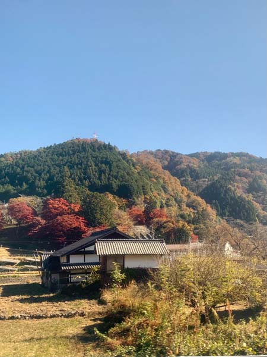
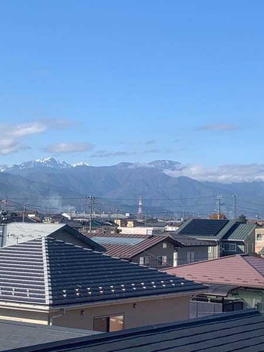
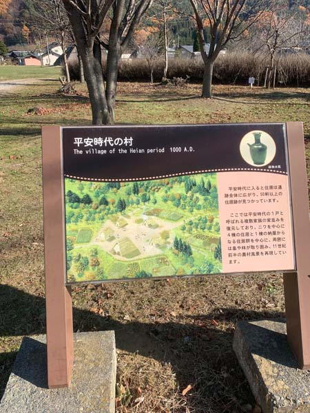
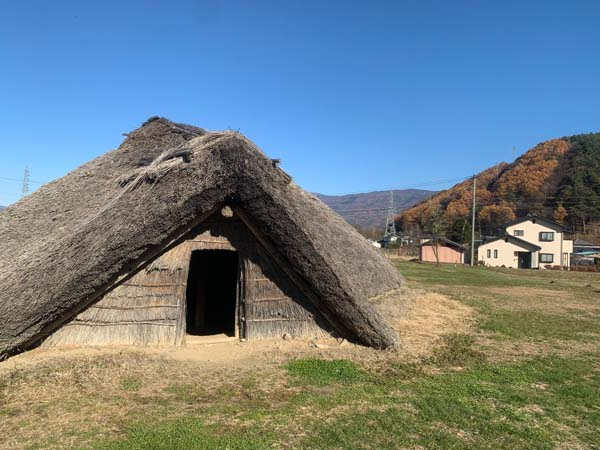
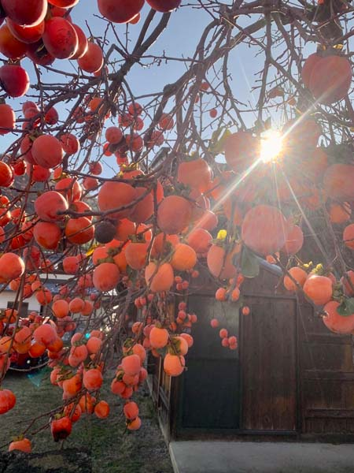
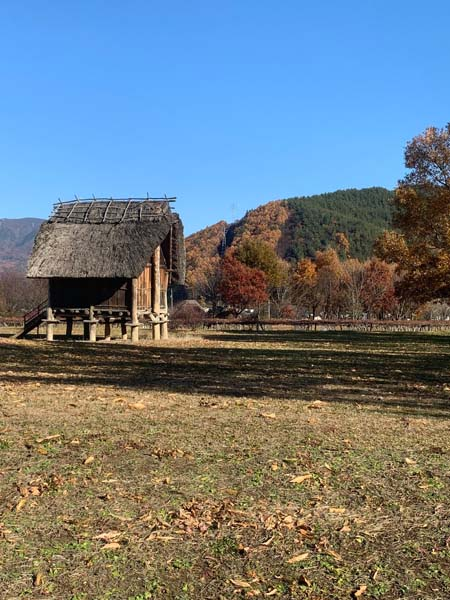
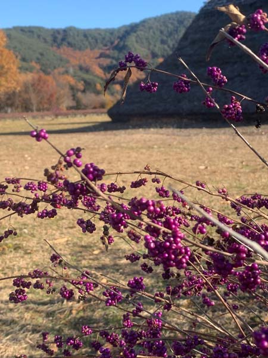
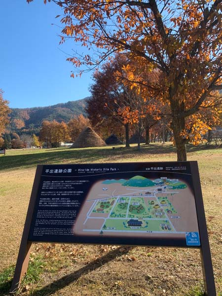
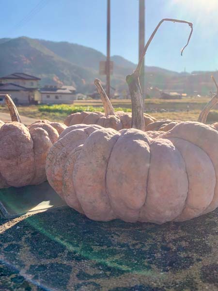
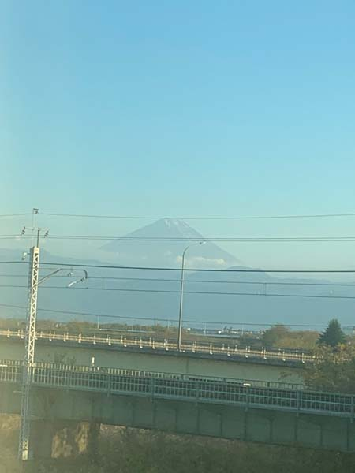

Journey from Osaka to Tokyo using only local trains, November 2025
TLDR: The journey only reccomended if you like trains (it's not cheaper than shinkansen)
One day journey
Local trains without pass
Shima-Isobe → Nagoya, Kintetsu
7:36–9:36
Nagoya → Gifu
600 yen
Gifu
11:44–15:32 → Takayama
Alternative route from Osaka:
6:30 Tsuruhashi → 8:23 Ise-Nakagawa
8:25 Ise-Nakagawa → 9:45 Nagoya
3,010 yen
Nagoya
10:00–11:54 → Shiojiri
5,810 yen
Shiojiri Hiraide Museum
Historic buildings and archaeological remains showing what life in the Shiojiri area was like in earlier periods




















Shiojiri → Tachikawa
15:45–15:50
Mt. Fuji spotted through the train windows
5,650 yen